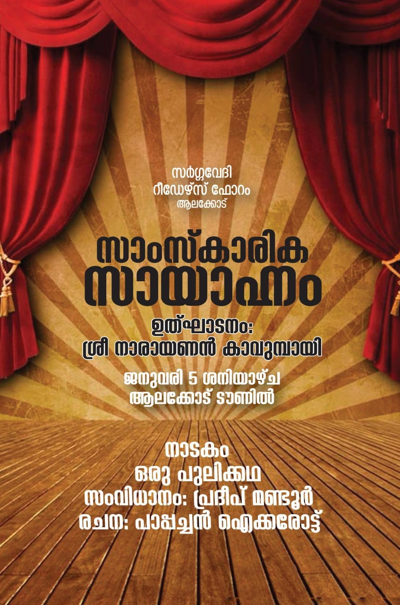
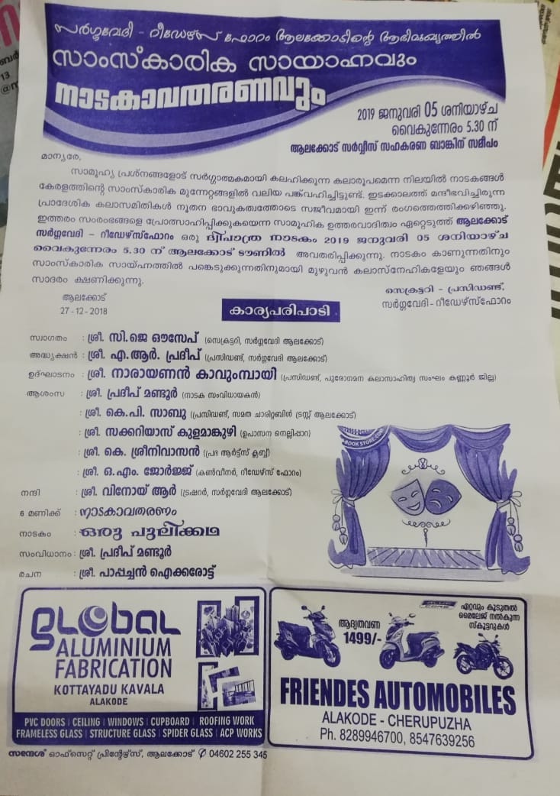
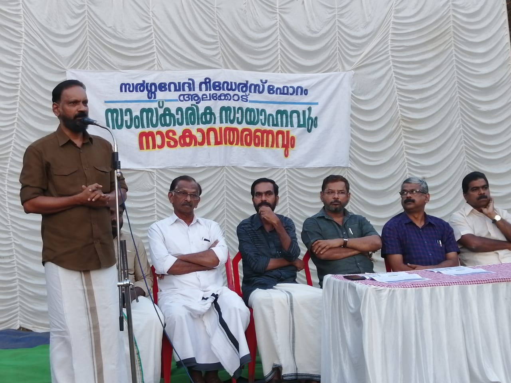
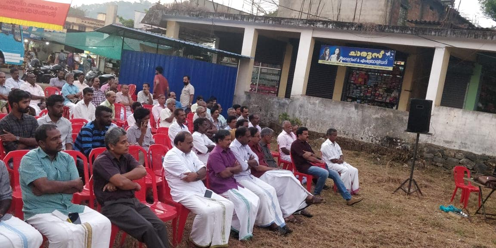
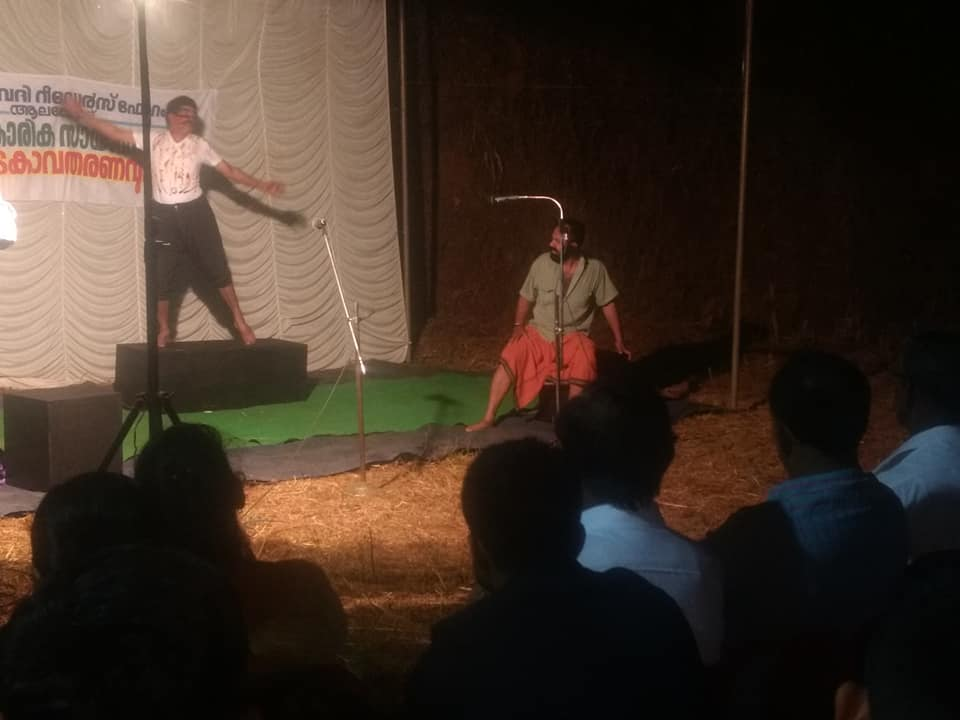
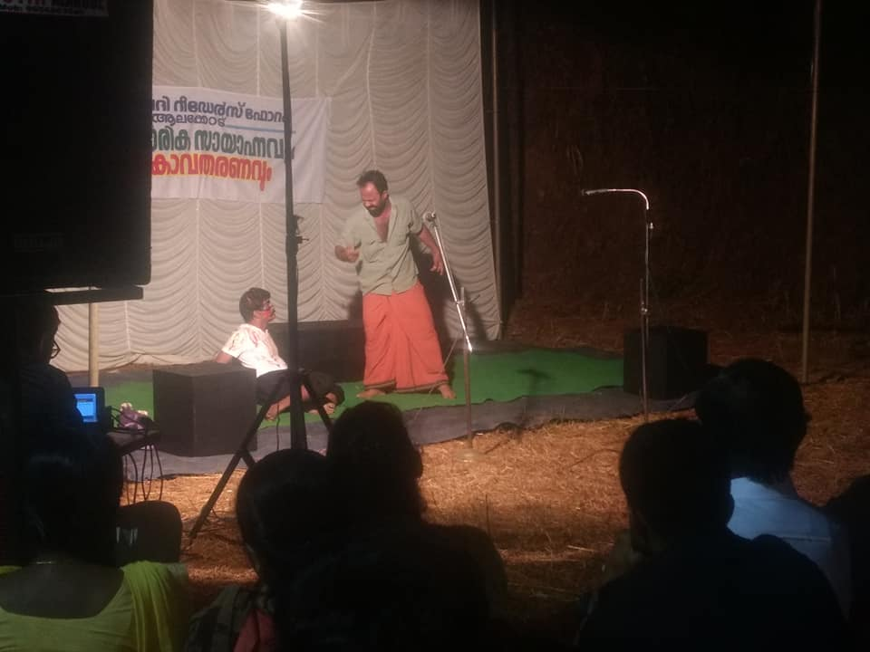
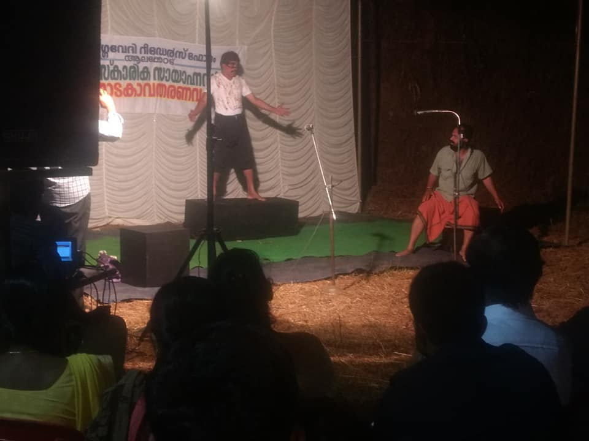
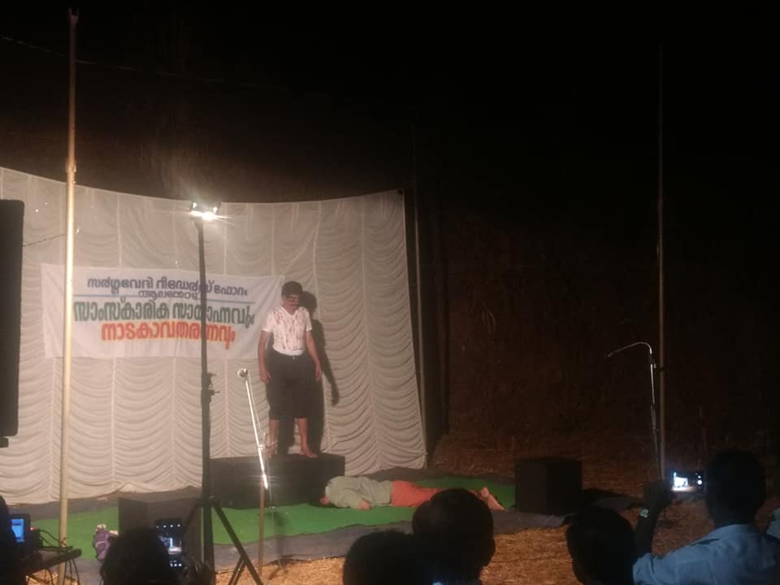
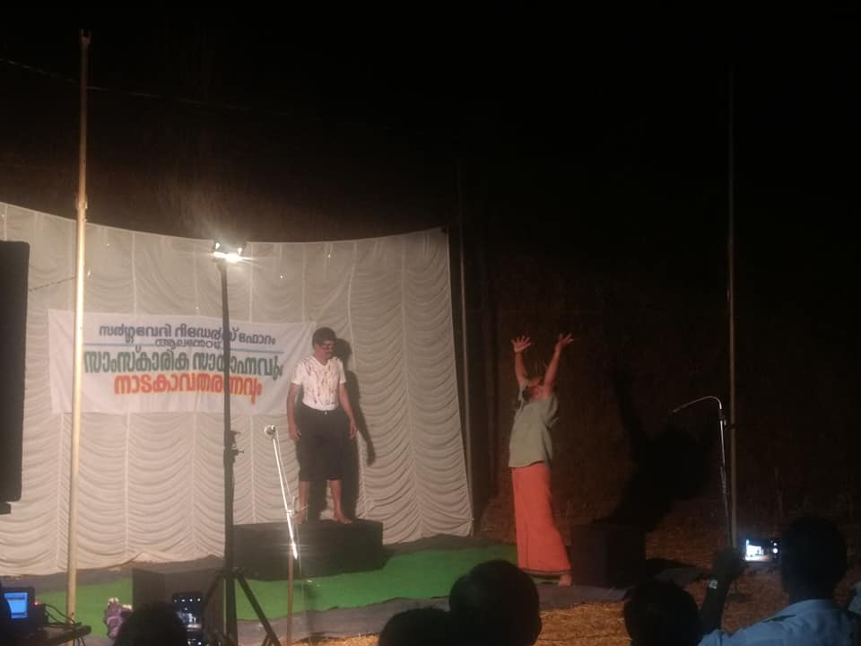
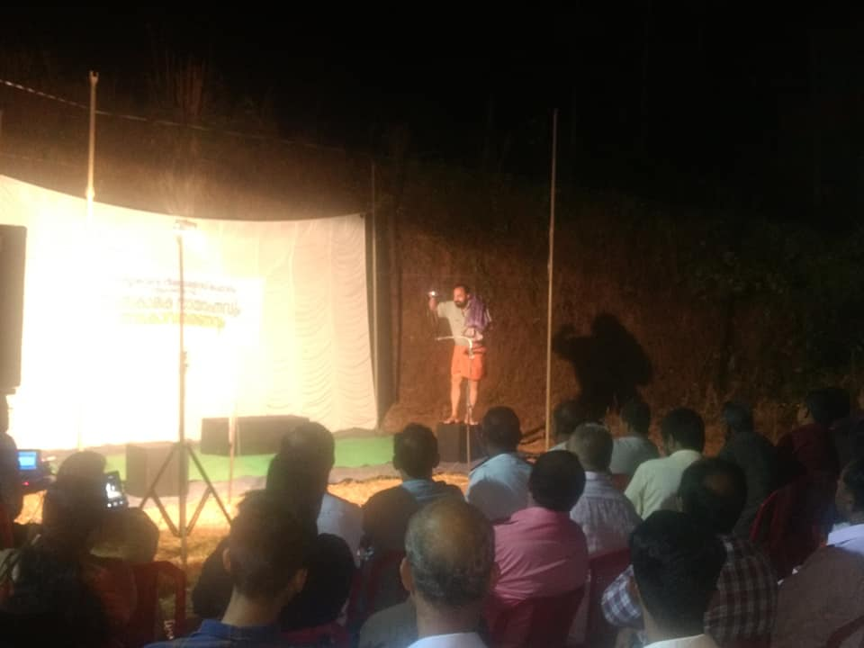
നാടകത്തെക്കുറിച്ച് സന്തോഷ് ചിറ്റടിആലക്കോട് റീഡേഴ്സ് ഫോറവും സർഗ്ഗവേദിയുടെയും നേതൃത്വത്തിൽ നടത്തിയ നാടക സന്ധ്യ ശ്രദ്ദേയമായി. ശ്രീ ഔസേഫ് മാഷ് സ്വാഗതവും ശ്രീ ഏ ആർ പ്രദീപ് അദ്ധ്യക്ഷനുമായ ചടങ്ങ് പുരോഗമന കലാസാഹിത്യ സംഘം ജില്ലാ പ്രസിഡൻഡ് ശ്രീ നാരായണൻ കാവുമ്പായി ഉദ്ഘാടനം ചെയ്തു. സർവ്വശ്രീ, കുളമാങ്കുഴിയേടം മലയോര നാടക ചരിത്രത്തെക്കുറിച്ചു നടത്തിയ ആശംസാ ഭാഷണം ചില ഓർമ്മപ്പെടുത്തൽ കൂടിയായിരുന്നു. ശ്രീ കെ പി സാബു, പ്രസാദ് മാഷ്, ജോർജ് സാർ തുടങ്ങിയവരുടെ ആശംസയും, നാടക സംവിധായകൻ ശ്രീ പ്രദീപ് മണ്ടൂർ നടത്തിയ നാടകപരിചയവും നാടകത്തിന്റെ വർത്തമാന ദൗത്യം വ്യക്തമാക്കുന്നു. ഉദ്ഘാടന പ്രസംഗം എന്തുകൊണ്ടും കാലികമായിരുന്നു, മലയാള നാടകത്തിന്റെ ചരിത്രവും വർത്തമാനവും ഉയർച്ചതാഴ്ച്ചകളും പുരോഗമന കാഴ്ച്ചപ്പാടോടെ അവതരിപ്പിക്കാൻ കഴിഞ്ഞു. നാടകം ചരിത്രത്തിന്റെയും വർത്തമാനത്തിന്റെയും കലാരൂപമാണ്. പയ്യന്നൂരിലെ ഒരു സ്ക്കൂളിലെ കുട്ടികളുടെ തീവ്രമായ നാടകാനുഭവം എന്റെ മുന്നിലുണ്ട്. മാനവിക പ്രശ്നങ്ങൾ എന്ന് കയ്യൊഴിഞ്ഞുവോ അന്ന് മലയാള നാടകം സാമാന്യജനതയിൽ നിന്നകന്നു. ഒരു തിരിച്ചുവരവിന്റെ പാതയിലാണിപ്പോൾ. നാടകത്തെ നാടകമാക്കുന്നത് ആളിക്കത്തുന്ന അതിലെ ജീവിതമാണ്, മറിച്ച് സ്റ്റേജ് ധാരാളിത്തമോ ദീപാലങ്കാര ബാഹുല്യമോ അല്ല. അടുക്കളയിൽ നിന്ന് അരങ്ങത്തേക്ക് എന്ന നാടകത്തിലെ അനുഭവം അതാണ് പകർന്നു തരുന്നത്. പഴയ ജനകീയ വിപ്ലവകാരികൾക്ക് സഖാവ് ഇ എം എസിനടക്കം നാടകം ഒരു സമരകലയായിരുന്നു. ചോരയും കണ്ണീരും ഇറ്റുവീണ വേദികൾ ഒരു കാര്യം ഉറപ്പിച്ചു പറയുന്നു നാടകം അരങ്ങിന്റെ സമരകലയാണ്... തുടർന്ന് കേരളീയ നവോത്ഥാനത്തിന്റെ കൈവഴികൾ പരാമർശിച്ചു കടന്നു പോയ ഉദ്ഘാടന പ്രസംഗം ഗംഭീരമായിരുന്നു.
തുടർന്ന് ശ്രീ പാപ്പച്ചൻ ഐക്കരോട്ട് രചന നിർവ്വഹിച്ച് പ്രദീപ് മണ്ടൂർ സംവിധാനം ചെയ്ത പുലിക്കഥ നിറഞ്ഞ സദസ്സിൽ പ്രദർശന ഉദ്ഘാടനം നടന്നു. ദ്വി പാത്രങ്ങൾ ഗംഭീരമായി അഭിനയിച്ചു... ജീവിതം നാടകമാകുന്ന വർത്തമാനകാല ഇതിവൃത്തം. അരങ്ങും അണിയറയും സമ്പന്നമാക്കിയ ആദരണീയർക്ക് നന്ദി....🙏🏻🙏🏻🙏🏻
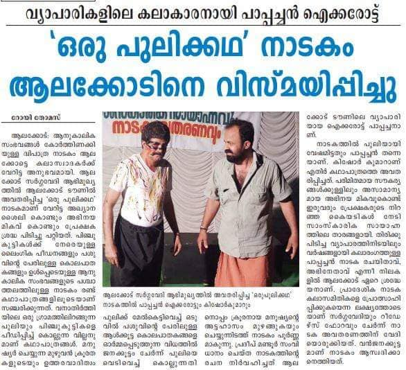
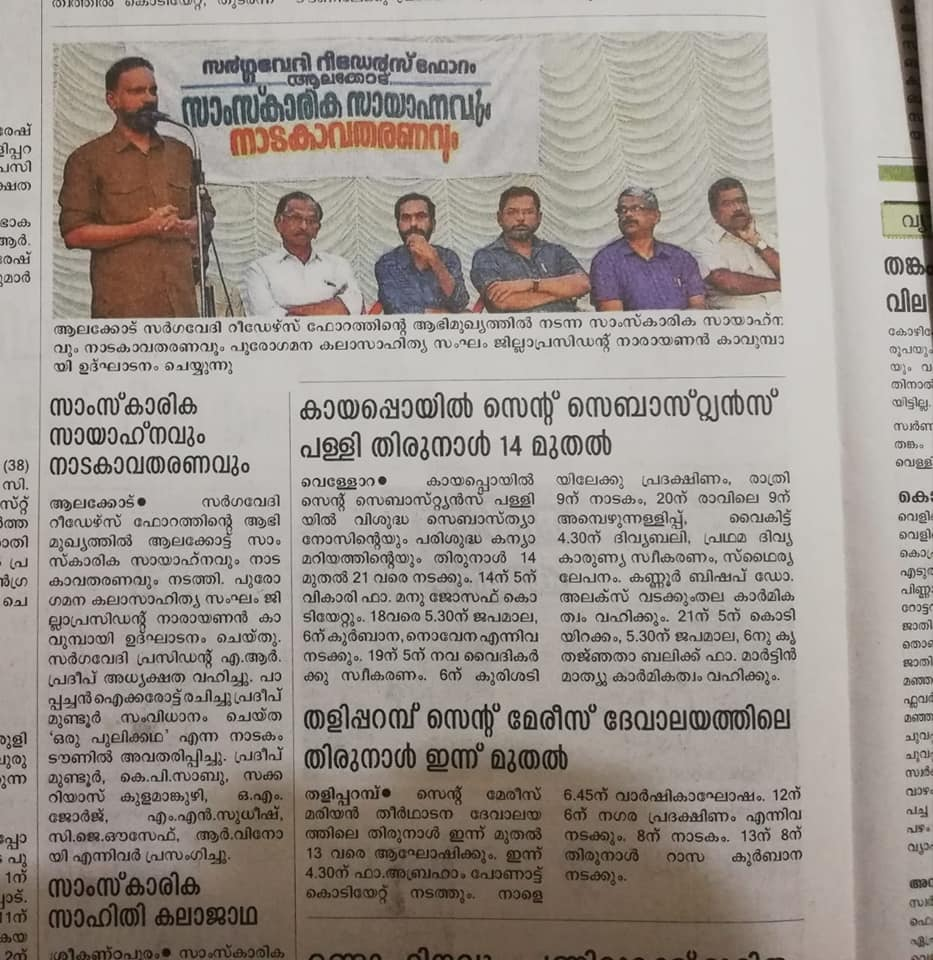
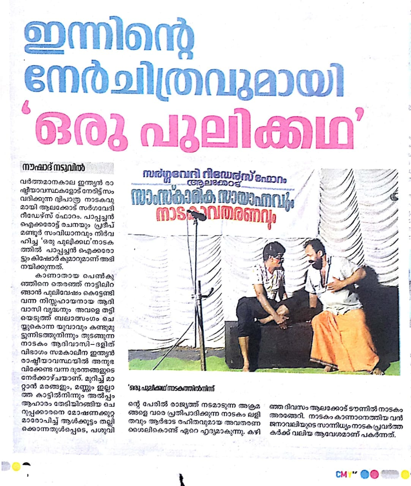
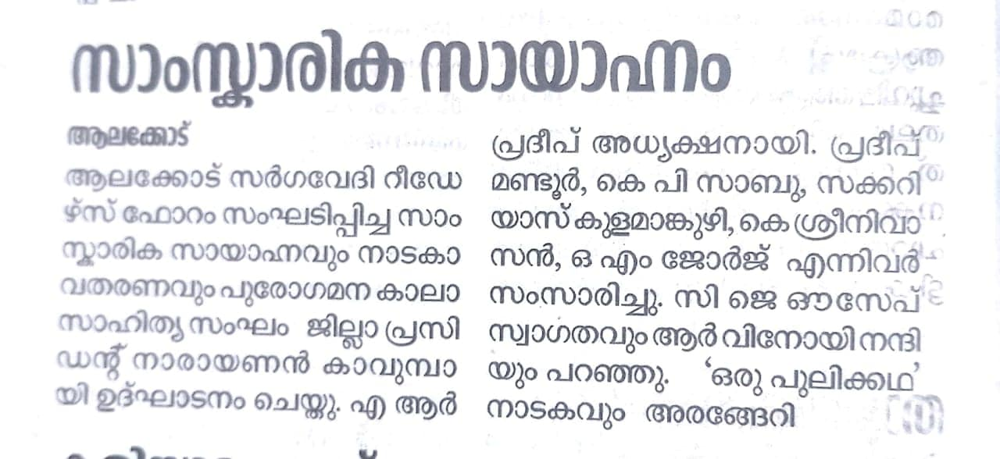